平台：STM32F103C8T6 最小系统核心板（Blue Pill）
环境：STM32CubeMX（STM32Cube FW_F1 V1.8.7）+ Keil MDK-ARM V5.32 + ST-Link V2
内容：任务一用 TIM2 的更新中断控制 LED 以 2 s 周期亮灭；任务二把 TIM2 通道 1 配成 PWM 输出做呼吸灯，并用 Keil 软件仿真的逻辑分析仪定量分析
器材：STM32F103C8T6 最小系统板、面包板、红色 LED、220 Ω 限流电阻、杜邦线、ST-Link V2；软件为 STM32CubeMX 与 Keil MDK-ARM V5.32。
引脚（两个任务共用）：PA0 → TIM2_CH1，外接红色 LED，高电平点亮。这样任务一的 GPIO 翻转与任务二的 PWM 输出可以复用同一套接线，只改软件配置。
时钟：HSE 8 MHz 经 PLL ×9 得到 SYSCLK = 72 MHz，HCLK = 72 MHz，APB1 = 36 MHz，APB2 = 72 MHz。
定时器本质是"数数"的硬件：时钟每来一个脉冲 CNT 加 1，数到 ARR 后归零，同时产生一次更新事件。预分频器 PSC 决定脉冲的疏密：
计数频率 f_CNT = f_TIM / (PSC + 1)
溢出时间 T_UPDATE = (PSC + 1) × (ARR + 1) / f_TIM两点必须注意：① CubeMX 里填的是"减一后的值"，7200-1 表示 7200 分频；② TIM2 挂在 APB1 上，APB 分频不为 1 时定时器时钟等于 APB 时钟的 2 倍，本例是 72 MHz 而不是 36 MHz。
更新事件可以产生中断（任务一用它翻转 LED），也可以只在硬件内部发生（任务二只关心波形，不开中断）。
把定时器配成 1 s 溢出一次，在中断回调里翻转 PA0，就得到"亮 1 s、灭 1 s"，亮灭周期 2 s。主循环完全空转，定时精度只由硬件时钟保证，不受主循环其他代码耗时影响。
计数器 CNT 与比较寄存器 CCR 持续比较：CNT < CCR 输出高电平，CNT ≥ CCR 输出低电平。因此
占空比 d = CCR / (ARR + 1)
高电平时间 T_ON = d × T_PWM
LED 平均电压 = 3.3 V × d要注意区分两个量级：PWM 周期是毫秒级（1 ms），呼吸周期是秒级（2 s）。波形由硬件自动产生，CPU 只是每隔一段时间改一个数（改 CCR）。这正是任务二与任务一的本质区别——任务一让 CPU 参与（中断翻引脚），任务二让 CPU 退出。
| 参数 | 任务一（计数方式） | 任务二（PWM 方式） |
|---|---|---|
| Prescaler (PSC+1) | 7200 → 计数 10 kHz | 72 → 计数 1 MHz |
| Counter Period (ARR+1) | 10000 → 更新 1 s | 1000 → PWM 1 ms（1 kHz） |
| 通道 | 不用通道，只用更新中断 | Channel1 = PWM Generation CH1 |
| 中断 | 使能 TIM2 global interrupt | 不使能（轮询改 CCR） |
| 现象 | 亮 1 s / 灭 1 s，周期 2 s | 占空比 0→100%→0，呼吸周期 2 s |
任务二的呼吸节奏：CCR1 每 1 ms 加 1（或减 1），0→1000 需 1 s（渐亮），1000→0 又 1 s（渐灭），全周期 2 s，落在题目要求的 1~2 s 内。
task1、Toolchain = MDK-ARM V5.32（图 4）；Code Generator 勾选"只复制必要库文件"与"按外设生成 .c/.h"（图 5）。Prescaler = 7200-1、Counter Period = 10000-1、auto-reload preload = Enable（图 6），即计数 10 kHz、溢出 1 s；NVIC Settings 勾选 TIM2 global interrupt（图 7）。MDK-ARM\task1.uvprojx。先把时钟源从内部 RC 换成板上 8 MHz 外部晶振——这是后面 PLL ×9 能出 72 MHz 的前提。
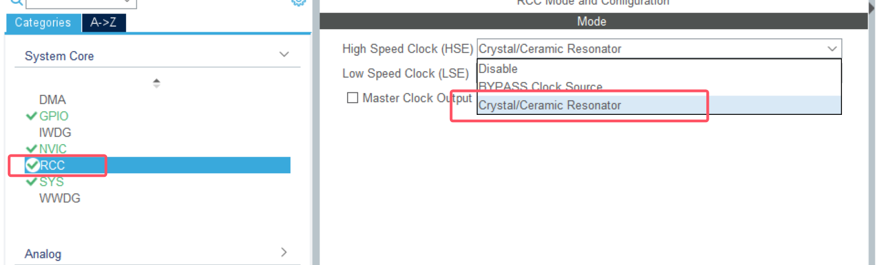
图 1 RCC 中把 HSE 设为 Crystal/Ceramic Resonator
调试接口选 SWD 两线，只占 PA13/PA14，不会像 JTAG 那样占掉 PB3/PB4/PA15 这几个常用引脚。
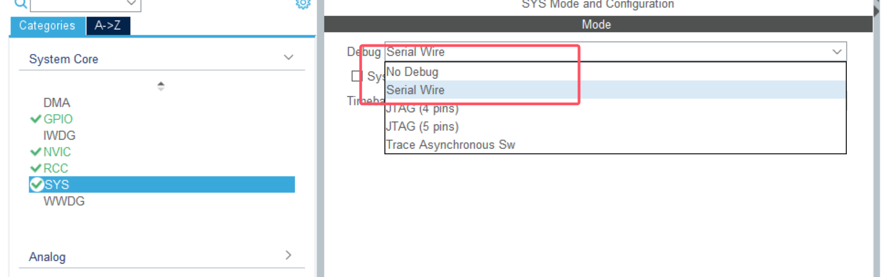
图 2 SYS 中 Debug 选择 Serial Wire
在时钟树里把 SYSCLK 拉到 72 MHz，同时把 APB1 设成二分频（36 MHz）。
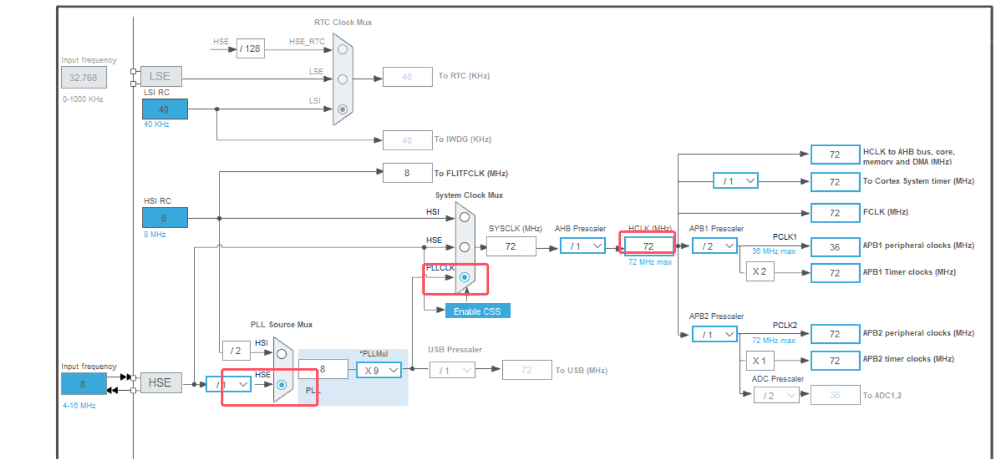
图 3 时钟树：SYSCLK = HCLK = 72 MHz，APB1 = 36 MHz
工程名和工具链决定了生成出来的 Keil 工程叫什么、放在哪个目录。
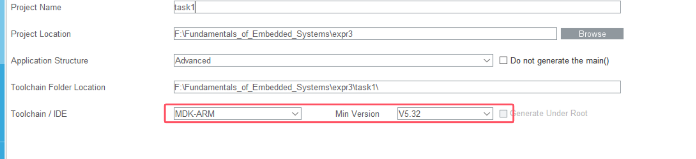
图 4 Project Manager 中的工程名与 MDK-ARM 工具链
勾选这两项之后，每个外设的初始化代码会单独生成到 tim.c、gpio.c 及对应头文件里。
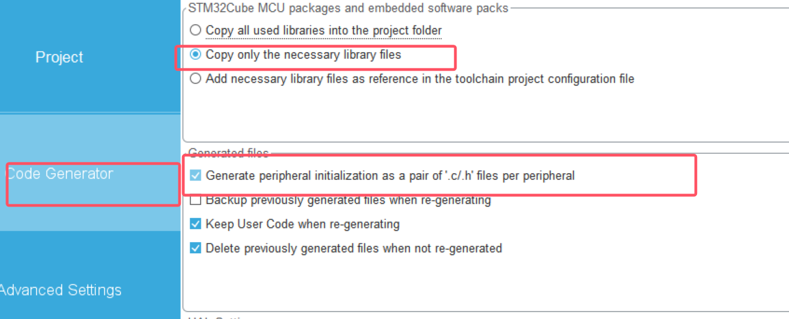
图 5 Code Generator 中"只复制必要库文件"与"按外设生成 .c/.h"
PSC 与 ARR 相乘正好是 1 s，这两个数就是任务一的时间基准。
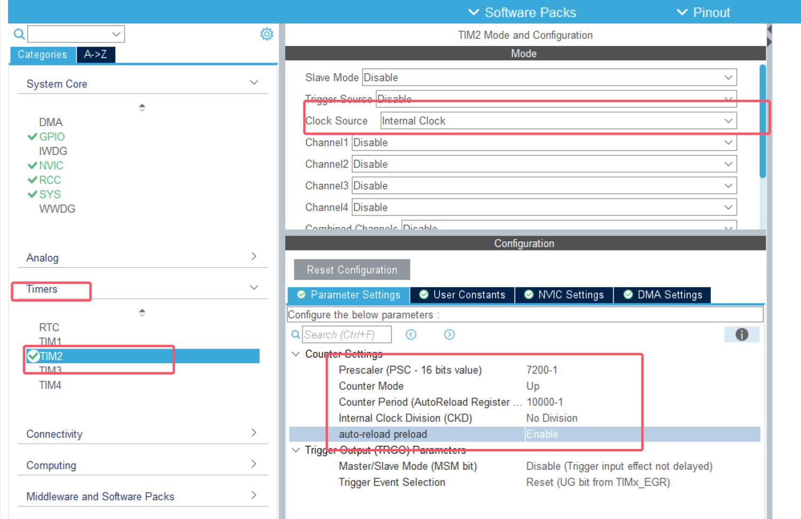
图 6 TIM2 选内部时钟，PSC = 7200-1、ARR = 10000-1，定时 1 s
勾上这一项，计数器每次溢出时 CPU 才会跳进中断去翻转引脚。
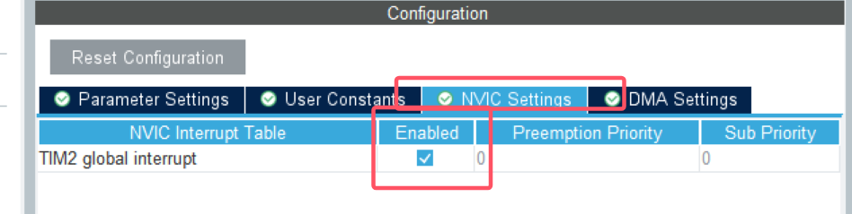
图 7 NVIC 中使能 TIM2 global interrupt
在引脚图上直接把 PA0 定为输出，CubeMX 会自动把 GPIOA 的时钟和寄存器配置一起生成好。
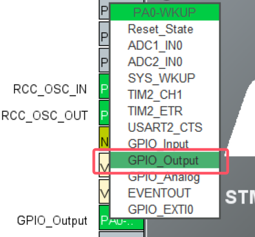
图 8 把 PA0 配置为 GPIO_Output
确认模式是推挽（不是开漏）、初始电平为低，否则灯要么不亮、要么一上电就亮着。
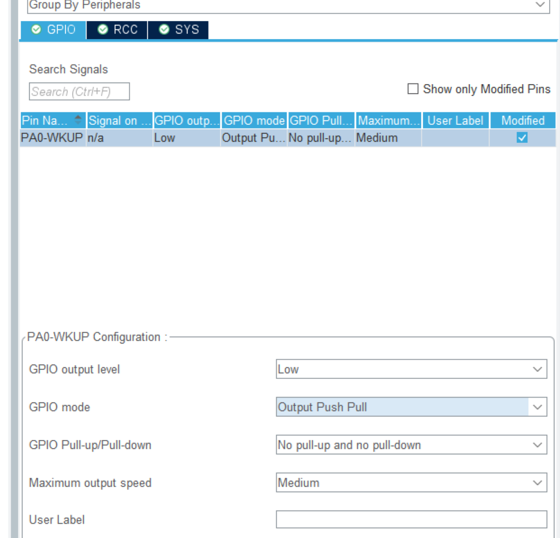
图 9 PA0 输出参数：推挽输出、初始低电平
代码写在 main.c 的 USER CODE 区域内，重新生成代码时不会被覆盖。
/* USER CODE BEGIN 2 */
HAL_TIM_Base_Start_IT(&htim2); // 启动计数，同时使能更新中断
/* USER CODE END 2 *//* USER CODE BEGIN 4 */
void HAL_TIM_PeriodElapsedCallback(TIM_HandleTypeDef *htim) // 每 1 s 调用一次
{
if (htim->Instance == TIM2)
{
HAL_GPIO_TogglePin(GPIOA, GPIO_PIN_0);
}
/* USER CODE END 4 */三个易错点：函数名 HAL_TIM_PeriodElapsedCallback 必须一字不差（它是 HAL 预留的弱函数）；不要自己再写 TIM2_IRQHandler（stm32f1xx_it.c 已生成，会转调 HAL）；启动函数别漏掉 _IT 后缀。
主循环 while (1) 里什么都不用写。按 F7 编译（0 Error）后用 ST-Link 下载。
PA0 上的红色 LED 以亮 1 s、灭 1 s 循环，周期 2 s。
下载后实测：红灯亮 1 s、灭 1 s，肉眼可见的 2 s 周期。
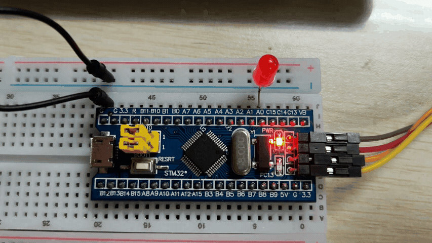
图 10 任务一运行现象：PA0 上的红色 LED 亮 1 s、灭 1 s（周期 2 s）
| 项目 | 理论值 | 依据 |
|---|---|---|
| 计数频率 | 10 kHz | 72 MHz ÷ 7200 |
| 更新中断周期 | 1.000 s | 7200 × 10000 ÷ 72 MHz |
| LED 亮 / 灭时间 | 各 1 s | 每次中断翻转一次 |
| 亮灭全周期 | 2 s | 2 × 1 s |
| 占空比 | 50% | 亮灭时间相等 |
误差只取决于晶振精度（典型 ±20 ppm）和中断响应延迟（约 1 µs 级），回调里只有一次引脚翻转，因此定时几乎无可见偏差。
把 expr3\task1 整目录复制为 expr3\task2，用 CubeMX 打开其中的 .ioc，把 Project Name 改成 task2，并确认 Toolchain Folder Location 指向 ...\expr3\task2\。这一步不能省：路径若还指向 task1，一次生成就会把任务一的工程覆盖掉。
模式：TIM2 → Channel1 选 PWM Generation CH1（图 11、图 12）。此时 PA0 会自动变成 TIM2_CH1（复用功能），System Core → GPIO 里原来的 PA0 配置项消失，属正常现象。
参数（图 13，注意 PSC/ARR 与任务一完全不同）：
| 分组 | 参数 | 值 |
|---|---|---|
| Counter Settings | Prescaler | 72-1（72 MHz ÷ 72 = 1 MHz） |
| Counter Period | 1000-1（1 MHz ÷ 1000 = 1 kHz） | |
| auto-reload preload | Enable | |
| PWM Generation Channel 1 | Mode | PWM mode 1 |
| Pulse | 0 | |
| Output compare preload | Enable | |
| CH Polarity | High |
中断：NVIC 中取消 TIM2 global interrupt（图 14），波形由硬件产生，主循环只改 CCR，不需要中断。
保存后生成代码，核对 tim.c：Init.Prescaler = 72-1、Init.Period = 1000-1、OCMode = TIM_OCMODE_PWM1、Pulse = 0、OCPolarity = HIGH，PA0 为 GPIO_MODE_AF_PP。
复用成 TIM2_CH1 后，PA0 不再是普通 IO，而是定时器的输出引脚。
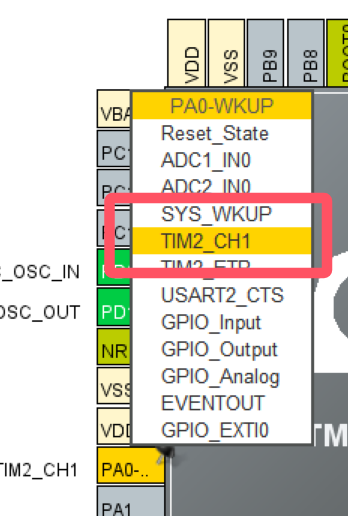
图 11 把 PA0 复用为 TIM2_CH1
通道 1 必须选 PWM Generation，硬件才会按比较结果自动翻转电平。
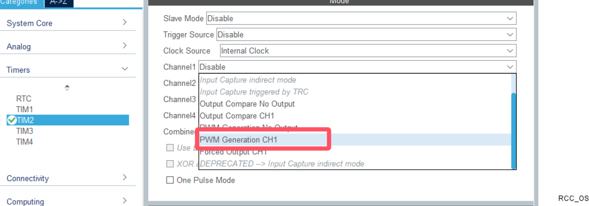
图 12 Channel1 选择 PWM Generation CH1
72 分频得到 1 MHz 计数，1000 个计数构成一个周期，于是 PWM 频率为 1 kHz。
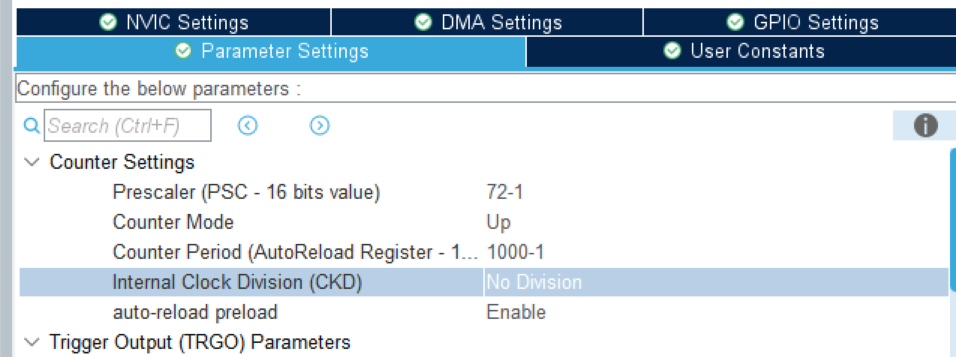
图 13 PSC = 72-1、ARR = 1000-1，得到 1 kHz、1000 级调光
呼吸灯靠主循环改 CCR、波形由硬件生成，因此更新中断可以整个关掉。
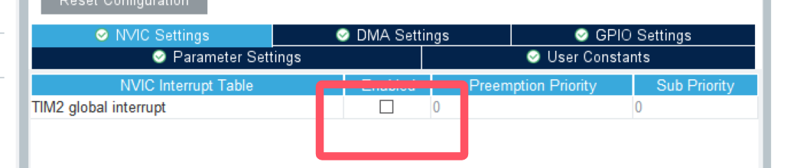
图 14 PWM 模式不再需要更新中断
/* USER CODE BEGIN 2 */
HAL_TIM_PWM_Start(&htim2, TIM_CHANNEL_1); /* PA0 开始输出 PWM */
/* USER CODE END 2 *//* USER CODE BEGIN 3 */
while (1)
{
for (uint32_t i = 0; i < 1000; i++)
{
__HAL_TIM_SET_COMPARE(&htim2, TIM_CHANNEL_1, i);
HAL_Delay(1);
}
for (uint32_t j = 1000; j > 0; j--)
{
__HAL_TIM_SET_COMPARE(&htim2, TIM_CHANNEL_1, j);
HAL_Delay(1);
}
}
/* USER CODE END 3 */__HAL_TIM_SET_COMPARE 就是改写 CCR1；因为 Output compare preload 已使能，新值在下一个 PWM 周期生效，不会出现半个周期的怪波形。可改进处：写 i <= 1000 才能真正到 100%，循环变量用 uint16_t 更贴合 CCR 位宽；若把 CCR 换成 duty*duty/1000（平方映射），按人眼对数特性会更像真实呼吸。
LED 由暗渐亮、再渐暗，一个完整呼吸周期约 2 s。
实测呼吸效果：由暗渐亮、再由亮渐暗，一个来回约 2 s。
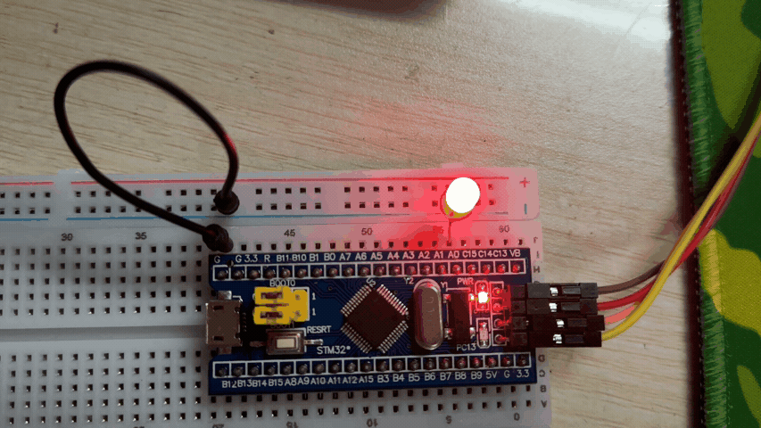
图 15 任务二运行现象：占空比 0→100%→0，LED 渐亮渐灭
配置：Options for Target → Debug 选 Use Simulator，核对 CPU DLL = SARMCM3.DLL / -REMAP、Dialog DLL = DARMSTM.DLL / -pSTM32F103C8，勾选 Run to main()；F7 重新编译后 Ctrl + F5 进入调试。-p 参数必须写具体型号，用默认的 -pCM3 认不出 TIM2 的寄存器。
添加信号：View → Analysis Windows → Logic Analyzer → Setup...，加三个信号（图 16、图 17）：TIM2_CNT（Analog，0~999）、TIM2_CCR1（Analog，0~999）、TIM2_SR（Bit，And Mask = 0x00000001）。
三个信号分别对应计数、比较值和标志位，是分析 PWM 所需的最小集合。
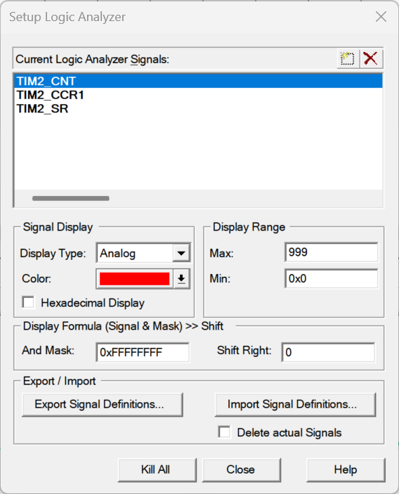
图 16 逻辑分析仪中添加 TIM2_CNT、TIM2_CCR1、TIM2_SR 三个信号
只保留 bit0，才能把 32 位的状态寄存器变成一根 0/1 数字线。
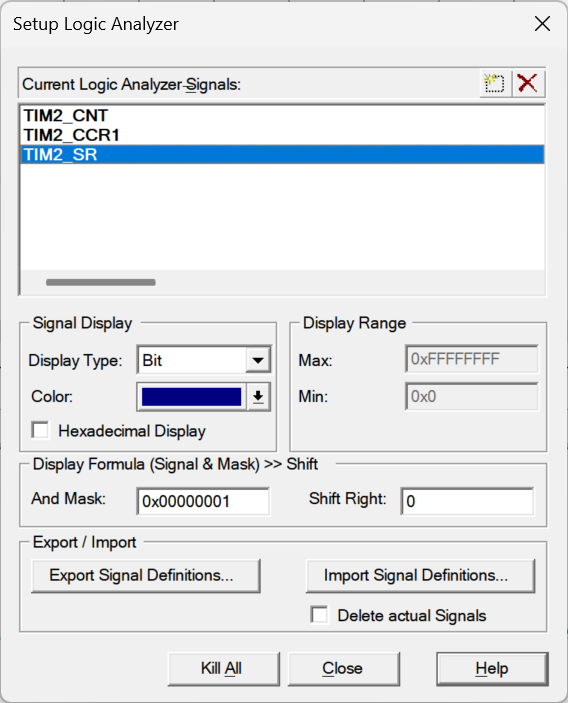
图 17 TIM2_SR 设为 Bit 显示，掩码 0x00000001 只取 UIF 位
测量结果：TIM2_CCR1 是一条缓慢上升再下降的三角波，峰谷为 999 和 0，说明占空比在 0~100% 之间周期扫描（图 18）。把游标分别停在同值两处（均 989），读得 Δ = 4.000716 s；由于这条三角波一个升降循环为 2 s，该间隔正好跨两个周期，折算单周期
4.000716 s ÷ 2 = 2.000358 s ≈ 2.000 s与设计值 2 s 吻合（偏差约 0.02%），说明"每 1 ms 改一档、共 1000 档"的时间换算正确。
三角波上两个同值点之间跨了两个呼吸周期，由此折算单周期约 2.0004 s。
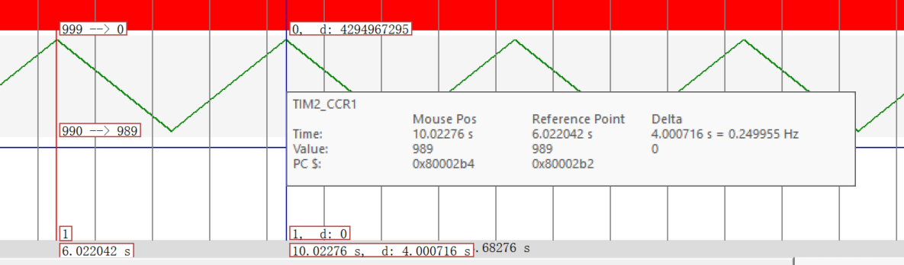
图 18 TIM2_CCR1 的三角波与游标测量（Δ = 4.000716 s，跨 2 个呼吸周期）
亮度换算举例：
| CCR1 | 占空比 | 高电平时间 | 平均电压 |
|---|---|---|---|
| 100 | 10% | 100 µs | 0.33 V |
| 300 | 30% | 300 µs | 0.99 V |
| 500 | 50% | 500 µs | 1.65 V |
| 900 | 90% | 900 µs | 2.97 V |
仿真的局限（一并记录）：Keil 的 STM32 仿真模型只模拟寄存器行为、不驱动引脚电平，porta.0 恒为 0，且 F1 的定时器输出不回写 GPIOA_ODR，因此引脚方波无法在仿真中看到；TIM2_SR 的 UIF 在 PWM 模式下无人清除，置位后一直为 1；TIM2_CNT 只在重装时刻刷新。引脚级波形需示波器或逻辑分析仪实测，本实验不具备该条件，报告中的方波均为按参数推算。
按本实验参数（1 MHz 计数、1 kHz PWM）绘制的理论示意如图 19、图 20。对照 5.5 节：TIM2_CCR1 三角波上每一点的纵坐标就是图 19 中某个方波的占空比——读到 CCR1 = 300，此刻 PA0 上就是占空比 30%、高电平 300 µs 的方波（图 20 下半部分），平均电压 0.99 V；读到 900 则占空比 90%、平均电压 2.97 V，灯很亮。CCR1 沿三角波往复变化，亮度随之呼吸。
四个占空比排在一起，高电平越来越宽，对应 LED 越来越亮。
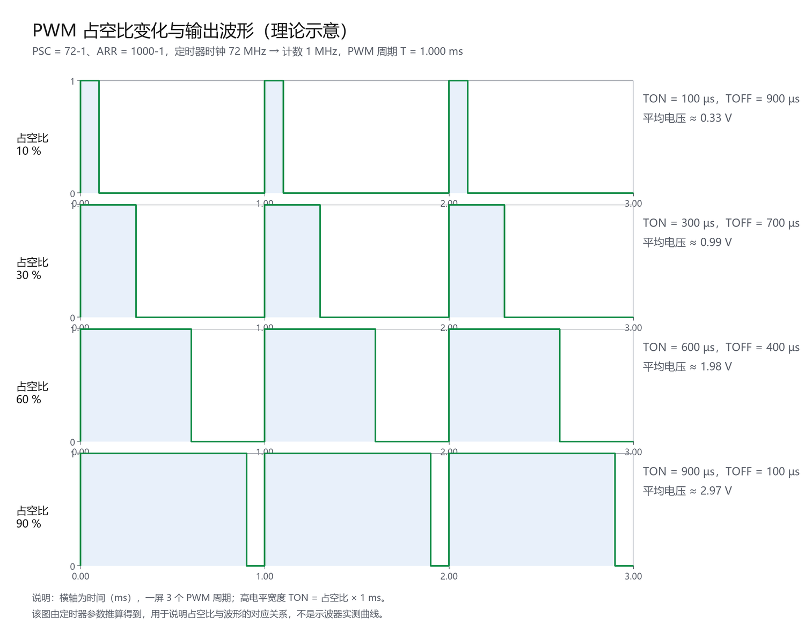
图 19 占空比 10% / 30% / 60% / 90% 对应的 PWM 波形（按参数推算的理论示意）
上下两栏对齐着看：CNT 越过 CCR1 的那一刻，输出正好翻成低电平。
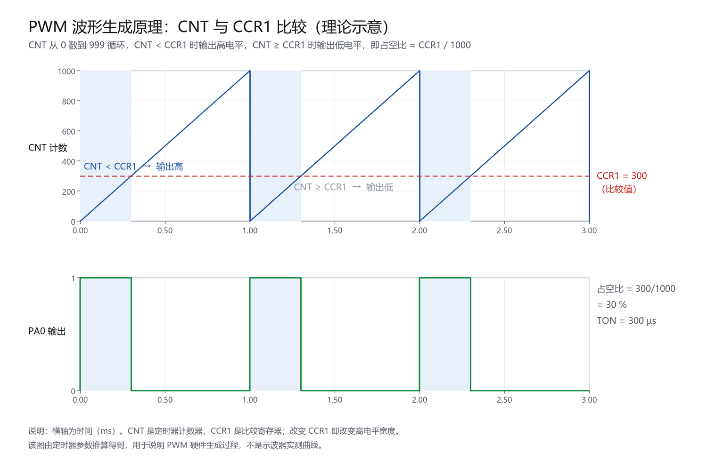
图 20 CNT 与 CCR1 的比较过程：CNT < CCR1 输出高、否则输出低（按参数推算的理论示意）
1. LED 完全不亮——GPIO 设成了开漏 PA0 的 GPIO mode 一开始选成 Output Open Drain（图 21），开漏输出高电平时引脚悬空、给不出 3.3 V，而 PA0 上没有上拉电阻，所以灯不亮。改成 Output Push Pull 后正常。
这就是当时导致灯不亮的设置：GPIO mode = Output Open Drain。
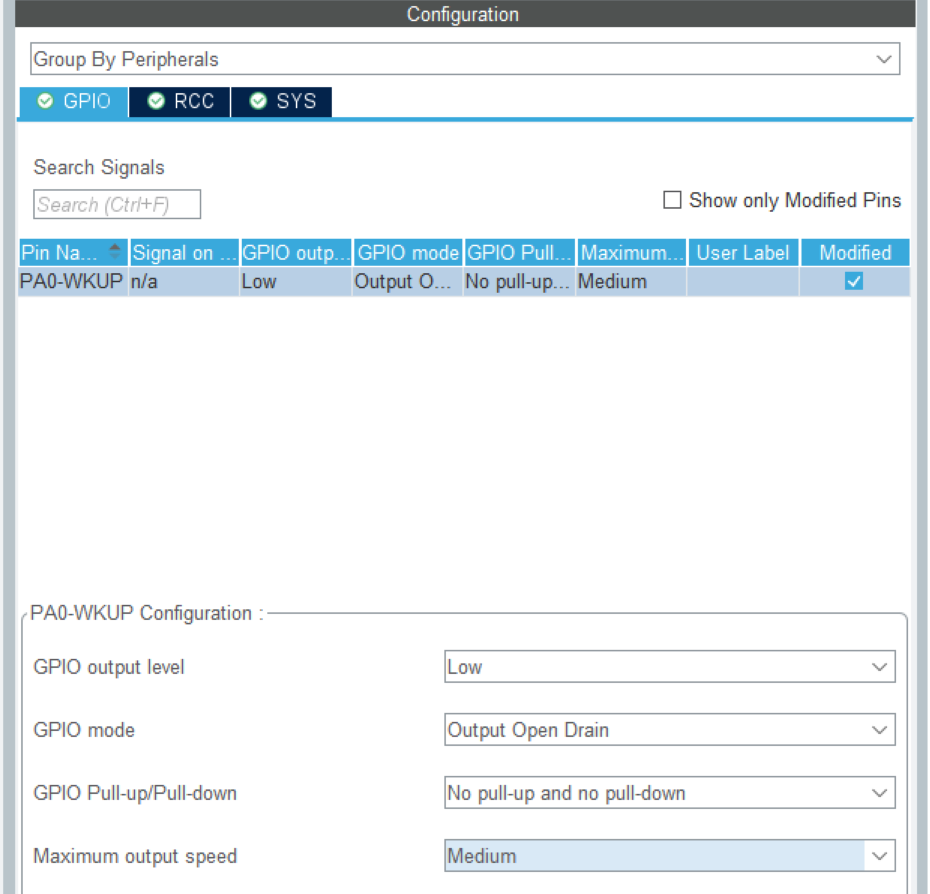
图 21 踩坑：GPIO mode 误设为 Output Open Drain，导致 LED 不亮
2. 复制工程后工程名没改，差点覆盖任务一 复制出的 task2 目录里 .ioc 内部仍是 ProjectName = task1，此时生成代码会把 Keil 工程写回 task1 目录。解决：生成前先改 Project Name 并核对 Toolchain Folder Location。
3. 逻辑分析仪认不出 TIM2_CNT Dialog DLL 默认是 DCM.DLL / -pCM3（通用 Cortex-M3 模型），改成 DARMSTM.DLL / -pSTM32F103C8 加载 STM32 外设模型后即可识别。
4. 仿真里看不到 PA0 方波、TIM2_SR 恒为 1 前者是仿真模型不驱动引脚，后者是 UIF 置位后无人清除，都不是程序错误。改用 TIM2_CCR1、TIM2_CNT 间接观察，并在报告中如实标注推算值。
下图就是当时尝试用 TIM2_SR 量周期的结果：看似读出了 2.000569 ms，但因为 SR 在 PWM 模式下恒为 1，这个数字只是两条游标之间的距离，与 PWM 周期无关——这正是“仿真里该看什么、不该看什么”的一个反例。
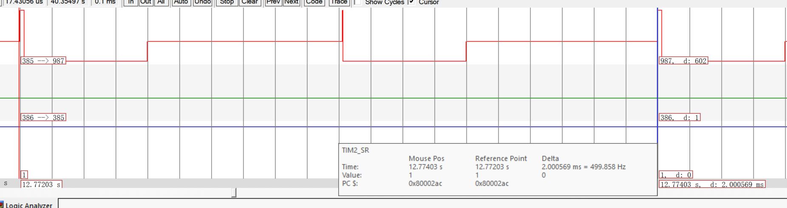
图 22 TIM2_SR 恒为 1 时的游标读数（Δ = 2.000569 ms），仅表示两条游标的间距，不能当作 PWM 周期
T = (PSC+1)(ARR+1)/f_TIM。任务一取 7200-1 与 10000-1，在 72 MHz 定时器时钟下得到 1 s 更新周期，中断翻转 PA0 实现 2 s 周期亮灭。PSC = 72-1、ARR = 1000-1 得 1 kHz、1000 级调光，无频闪。CCR1 使占空比在 0~100% 扫描，全周期 2 s；仿真测得 CCR1 三角波周期折算 2.0004 s，与设计偏差约 0.02%。这次实验最让我意外的是，同一个 TIM2 就能同时管住两个完全不同的时间尺度：任务一要 1 s 的等待，任务二要 1 ms 的波形，差别只在 PSC/ARR 的数量级，以及"CPU 参不参与"——任务一靠中断翻引脚，任务二只改一个数、波形全交给硬件。想明白这一点，__HAL_TIM_SET_COMPARE 就从一个"赋值"变成了"向硬件报占空比"。
另一件印象深的是"先算后填"。PSC/ARR 填的是减一后的值，APB1 上的定时器时钟还要乘 2，两个反直觉叠在一起很容易算错；我先用公式算出 1 s 和 1 ms、填完再反验一遍才敢生成。坑也踩了两个：GPIO 选成开漏导致灯不亮（开漏只有下拉能力），以及本以为能在仿真里直接看 PA0 方波，结果发现仿真只走寄存器、不走引脚。这两件事让我形成一个习惯——先怀疑配置、再怀疑代码，并且清楚工具能告诉你什么、不能告诉你什么。